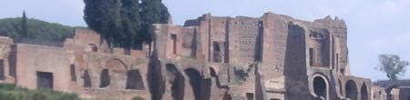
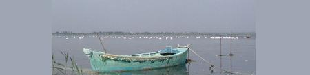
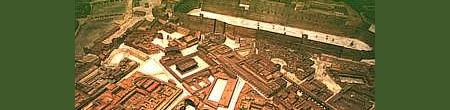

XXIV L'ETRANGER
Etranger. Etre le regard qui t'invente.
Le mot dans ta bouche d'ombre. L'Aventin
D'où César contemple la cité mouvante
Devenue fournaise et braise où s'éteint

L'aurore qu'il pensait qu'il fut. Avenue
Caniculaire, sans vent ni chant, le long
D'un mur d'hôpital chaulé, la gorge nue
Perlant de sueurs d'une passante, l'ombre
Etroite, le promeneur traqué qui marche
Au fond d'un silence tellement lourd, tellement
Dur qu'il en frappe comme un archet
Les cordes invisibles, allant tel
Il allait lorsque retentissaient les cloches
De Saint Clément, à la mi-août répondant
A Nicolas et aux Frères Nantais proches
Dans une rue endormie, cependant
Qu'en chapeau noir agrémenté de dentelles
Trotte tenant par la ficelle un gâteau
Dominical, la dévote aux immortelles
Qui disparaît vers la place du château-
Mais lui croyait qu'il errait au creux d'un rêve.
(Etre celui qui rêve qu'il est celui
Qu'un rêve tient et sera, lorsque se lèvera
Le rêve, un autre rêve qui fuit)
Cabinet clos de velours et de cretonnes,
Barque tanguant sur la lame d'effroi,
L'esprit glacé vacille, mais l'éclair tonne
Quand le veilleur règne au centre de la croix

Car son regard aux chairs s'arrache, aux peintures-
Brasier des chairs qu'habite la vision-
(Eté flambait quand débuta l'aventure
Des corps évanouis que l'explosion
D'amour éparpilla par sphères et âges
Pour resplendir étoile au ciel des amants)
Et repoussés le sommeil et ses mirages,
Il regagne l'indivisible élément.
Michel Galiana (c) 1990
|
XXIV THE STRANGER
To be the stranger's glance that is construing you.
Word put into your Mouth of Shade. The Aventine
Where Caesar considered the swaying city's view
That was turned to glowing ember, did outshine

The dawn he meant to be. And, walking down the road
On that scorching hot day, bare of wind, song or shout,
- Along the whitewashed wall of a hospital strode
A girl on whose bosom thick beads of sweat stood out,
Narrow was her shadow- the distraught man would go
Amid silence that was so heavy and so harsh
That he might hit with it, as he would with a bow,
Some invisible strings; that's how the stroller marched,
Hurrying on his way, when bells of Saint Clement
On that Assumption Day were heard holding in check
Those of Saint Nicholas or of Saint Donatien
Looming somewhere nearby in a drowsy street, yet...
-There came, trotting along, holding on a ribbon
A Sunday cake, with her black hat that was adorned
With lace and everlasting flowers, an old woman
Heading for Castle Square. Round the corner she turned-
He thought he was struggling in the depths of a dream.
(That in that dream he was a benumbed dreamer,
Who, when he would awake from this first dream, would seem
To live another dream, and so on forever...)
Cabinet covered with velvets and calicoes,
Barge pitching and tossing on a wave of dismay
The terror-struck spirit staggers, yet the billows
Bend to the Watchman on the Cross who still holds sway
For his glance tears itself from the mundane pictures-
From the bonfires of flesh underlain by vision-
(Summer was ablaze when began the adventure
Of those vanished bodies that by an explosion
Of love were all scattered over spheres and ages
To become a clear star that in love's skies would surge)
And once slumber is cast out with its mirages
He returns to dwellings where everything must merge.
Transl. Christian Souchon 01.01.2006 (c) (r) All rights reserved
|